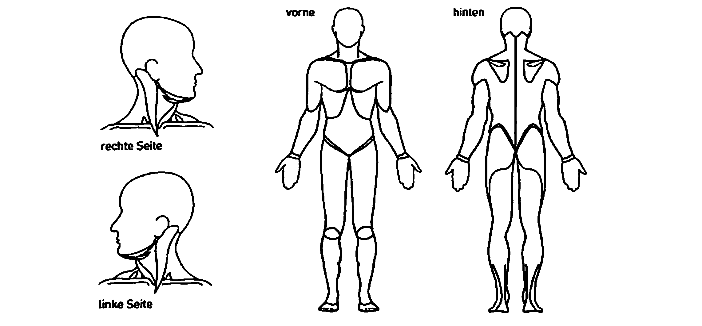

MRT‑Untersuchung – Information und Aufklärung
MRT oder auch Kernspintomographie ist eine moderne Untersuchungs‑Methode zur Erkennung eventueller krankhafter Veränderungen. Der Magnet‑Resonanz‑Tomograph erzeugt dabei in einem starken Magnetfeld überlagerungsfreie Schnittbilder, z. B. vom Kopf, von der Wirbelsäule oder von Gelenken. Dabei werden keine Röntgenstrahlen angewandt. Die Untersuchung ist schonend und schmerzfrei.
Was müssen Sie vor der MRT‑Untersuchung unbedingt beachten?
Gegenstände aus Eisen und andere magnetische Metalle (Uhr, Brille, Haarnadeln, Schmuck, herausnehmbare Zahnprothesen, Hörgeräte, Geld, Schlüssel, usw.) stören das Magnetfeld. Alle diese losen Gegenstände dürfen Sie auch aus Sicherheitsgründen auf keinen Fall in den Untersuchungsraum mitnehmen. Kreditkarten und andere digitale Datenträger lassen Sie bitte in der Kabine, da sie im Untersuchungsraum vom Magneten gelöscht werden.
Wann darf keine MRT‑Untersuchung durchgeführt werden?
Wenn Sie einen Herzschrittmacher tragen, ist Ihnen leider keine MRT‑Untersuchung möglich, da der Magnet die Funktion des Herzschrittmachers stört. Bei metallischen Fremdkörpern (Metallsplitter, Clips) im Gehirn, Augapfel, in der Lunge oder nahe an Blutgefäßen und bei Metall‑Implantaten im Mittel‑ oder Innenohr führen wir eine MRT‑Untersuchung aus Sicherheitsgründen nicht durch.
Wie läuft die Untersuchung ab?
Zu Beginn der MRT‑Untersuchung werden Sie auf einer bequemen Liege gelagert und anschließend in die Gehäuseöffnung des Magneten hinein gefahren. Um gute Bilder zu erzielen, ist es sehr wichtig, dass Sie die gesamte Zeit ruhig und entspannt liegen. In den kurzen, beiderseits offenen Enden strömt ständig Frischluft. Bei zahlreichen Untersuchungen, z. B. im Bereich der unteren Körperhälfte, befindet sich der Kopf nicht im Gerätetunnel, sondern außerhalb des Magneten. Während der Untersuchung treten regelmäßig zum Teil sehr laute klopfende Geräusche mit unterschiedlichem Rhythmus auf.
Gegen dieses Klopfen erhalten Sie von uns einen wirksamen Gehörschutz. Sollten Sie sich während der Untersuchung nicht wohl fühlen, können Sie sich mit einer Klingel bemerkbar machen. Außerdem beobachten wir die gesamte Untersuchung von unserem Bedienpult aus. Wenn Sie zu Beklemmung in engen Räumen neigen, geben wir Ihnen nach Absprache ein schnell wirksames Beruhigungsmittel.
Wie lange dauert eine MRT‑Untersuchung?
In der Regel ca. 15–20 Minuten. Der Beginn und die endgültige zeitliche Dauer der MRT‑Untersuchung können jedoch vorher nicht auf die Minute festgelegt werden. Manche Befunde erfordern einen höheren Zeitaufwand, um die Diagnose zu stellen. Außerdem kommen im Untersuchungsprogramm einzelne akute Notfälle dazu, denen wir gerecht werden müssen. Haben Sie bitte Verständnis, wenn trotz sorgfältiger Terminplanung Wartezeiten entstehen.
Ist eine Kontrastmittelgabe erforderlich?
Bei einigen Fragestellungen ist es notwendig, zur MRT‑Untersuchung Kontrastmittel zu verwenden. Diese werden über eine Armvene gespritzt. Die MRT‑Kontrastmittel sind ca. 10‑mal besser verträglich als jodhaltige Kontrastmittel und können auch bei bestehender Jodallergie (Allergie gegen Röntgen‑Kontrastmittel) eingesetzt werden. MRT‑Kontrastmittel werden über die Nieren innerhalb von 24 h vollständig ausgeschieden. Extrem selten kann jedoch eine Erkrankung ausgelöst werden (sog. nephrogene systemische Fibrose = NSF), die mit einer nicht behandelbaren Bindegewebserkrankung der Haut einhergeht und zu einer Einschränkung der Beweglichkeit führen kann, ggf. bis hin zur Gelenksteife. Im Verlauf können auch Organe geschädigt werden. Besonders gefährdet sind Patienten mit schwerer Nierenerkrankung oder vor bzw. nach einer Lebertransplantation.
Können bei einem MRT Komplikationen auftreten?
Make‑up und Tätowierungen können vereinzelt zu leichten Hautreizungen führen. In sehr seltenen Fällen kann es bei der Verwendung von Kontrastmitteln zu leichten allergieähnlichen Hautreaktionen mit Unwohlsein kommen. In extrem seltenen Fällen (ca. 1:8.000.000) können ernstere allergische Reaktionen auftreten.
Was muss ich nach der Untersuchung beachten?
Nach Ende der Untersuchung sind vom Patienten keine besonderen Verhaltensmaßregeln zu beachten. Ausnahme: Beruhigungsmittel während der Untersuchung. In diesem Fall müssen das Steuern eines Kraftfahrzeugs und die Arbeit an gefährlichen Arbeitsplätzen bis 24 Stunden nach der Untersuchung unterbleiben. Außerdem müssen Sie sich von einer Begleitperson abholen lassen.
Sollten Stunden oder Tage nach der Untersuchung Hautausschlag, Hautjucken, Übelkeit oder Schmerzen auftreten, suchen Sie bitte umgehend einen Arzt auf!
Persönliche Daten
Sicherheitsfragen zur MRT‑Tauglichkeit
Bitte beantworten Sie die folgenden Fragen sorgfältig und wahrheitsgemäß.
Fragebogen zu Ihrer Gesundheit
Alle hier gemachten Angaben werden streng vertraulich behandelt. Bitte beantworten Sie die Fragen möglichst exakt und wahrheitsgemäß.
1.0 Wo haben Sie momentan Schmerzen?
Ich habe Beschwerden im Bereich:
1.1 Bitte markieren Sie in der Darstellung die Gebiete, in denen Sie Schmerzen haben.
Malen Sie mit dem Finger, Stift oder der Maus über die betroffenen Stellen. Mit „Radieren" können Sie Korrekturen vornehmen.

2.0 Wie sind Ihre Schmerzen?
Einwilligung
Ich habe mir meine Entscheidung gründlich überlegt; ich benötige keine weitere Überlegungsfrist. Ich willige in die MR‑Tomographie ein.
Mit der Durchführung der Untersuchung und einer evtl. notwendigen Kontrastmittelgabe bei meiner Tochter/meinem Sohn bin ich einverstanden.
Die Unterschrift des Arztes/der Ärztin erfolgt separat vor Ort im Anschluss an das Aufklärungsgespräch.
Zusammenfassung & PDF erstellen
Bitte prüfen Sie Ihre Angaben. Mit Klick auf „PDF erstellen" wird der ausgefüllte Anamnesebogen als PDF‑Datei erzeugt und auf diesem Gerät zum Download angeboten. Es werden keine Daten an einen Server übertragen – die Verarbeitung erfolgt vollständig lokal in Ihrem Browser.